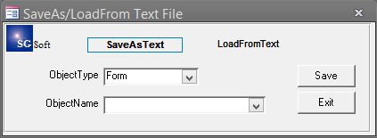

Автор: Сергей Гаврилов sgsoft@mail.ru
Вот, делал для себя, но может и другим пригодится. SaveAs/LoadFrom Text
File v1.0 - это MS Access Add-In, позволяющий сохранять объекты базы
данных (запросы, формы, отчеты, макросы и модули) как текстовые файлы и,
наоборот, загружать эти объекты из текстовых файлов. Бывает удобно
пересылать формы эл. почтой.


MSA-ALL VER ( 66 kB)